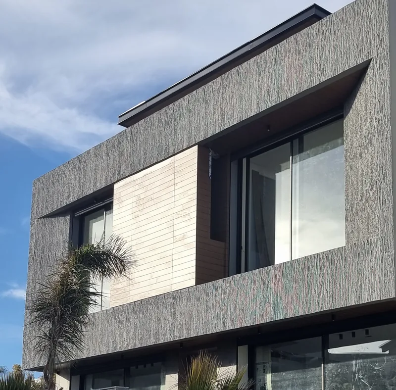
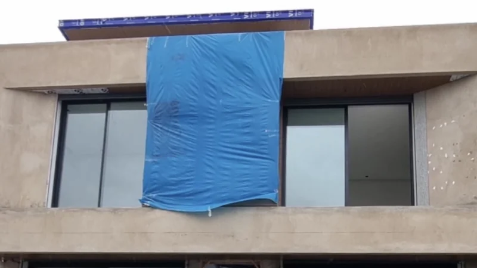
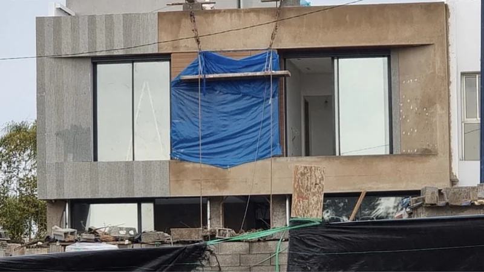
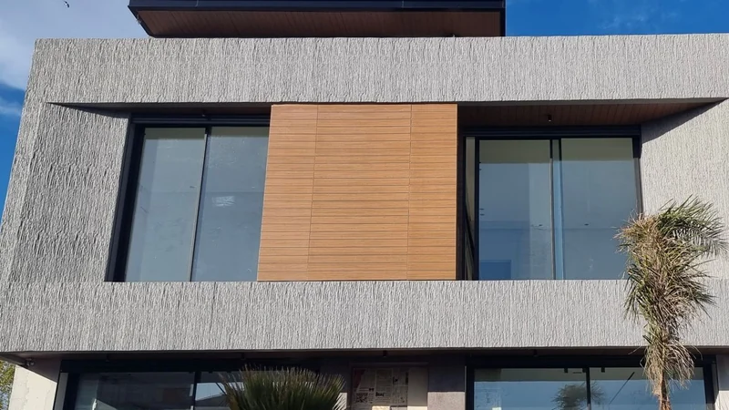
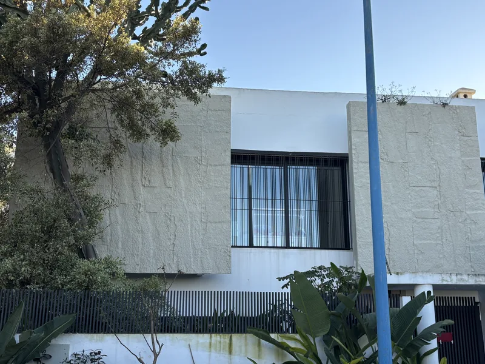
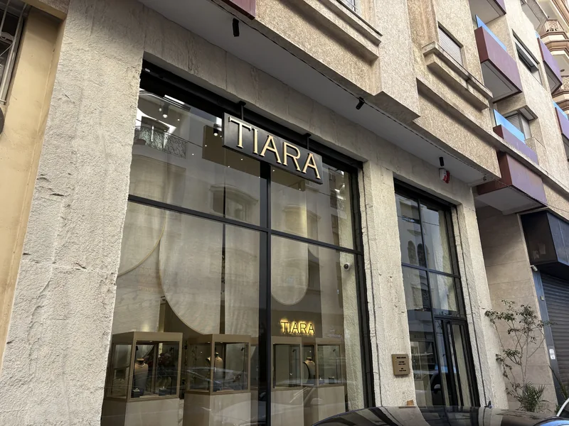
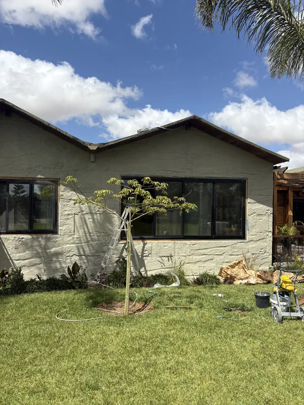
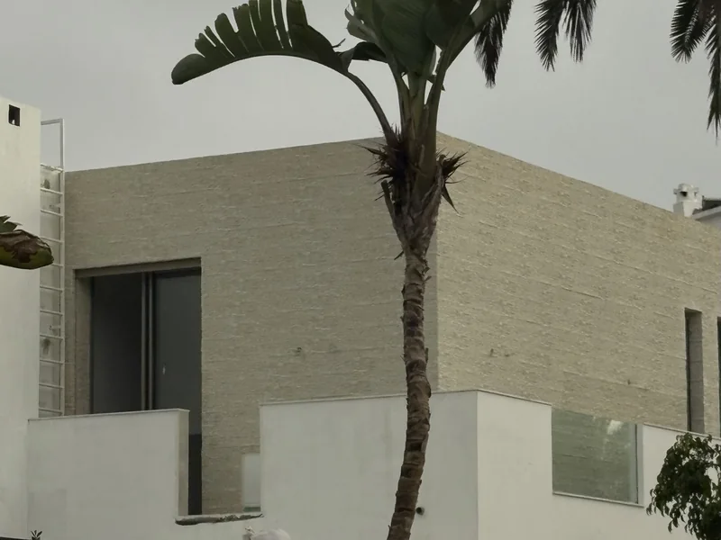
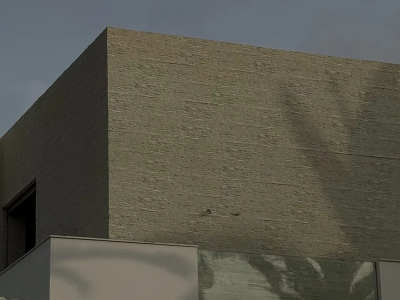

Revêtement de façade effet pierre pour villa
Un revêtement de façade qui donne à votre villa l'aspect de la pierre, sans maçonnerie lourde : les panneaux Le Celestone™ sont collés et vissés sur le mur, puis peints dans votre teinte. La matière n'absorbe pas l'eau et résiste au soleil. Nos équipes posent à Casablanca, Bouskoura et Dar Bouazza.
Villa à Aïn Diab · Mattoni, anthracite
Un revêtement de façade pour la villa entière, ou pour un volume
Pas besoin de « tout refaire » pour que la maison se remarque depuis la rue. On peut habiller toute la façade, ou seulement un avancé, un encadrement de fenêtres, un pignon, et laisser le reste en enduit.
Villa ou maison
Toute la façade, ou seulement les volumes à faire ressortir. La simulation photo vous montre les deux options avant de décider.
Entrée et mur de clôture
Même relief sur la façade et sur la clôture : la maison se lit d'un seul tenant. Voir aussi l'habillage de mur de jardin.
R+1, R+2
Hauteur, accès, échafaudage : tout cela se regarde pendant la visite de métré, avant le devis.
Commerce et devanture
Une façade de boutique qui tient face à la rue et se repeint quand l'enseigne change. Exemple : Tiara, rond-point des Sports.
Ce que Le Celestone™ change sur une façade
L'aspect de la pierre
La pierre brute du Big Rock, l'ardoise en lamelles du Mattoni, la pierre éclatée du Cubo. Le relief accroche la lumière rasante du soir.
Il ne boit pas l'eau
Le Polymère Celestone™ n'absorbe pas l'eau et résiste à l'humidité : pluie d'hiver, brume du matin, arrosage du jardin au pied du mur.
Votre teinte, en Jotashield
Livré en primaire, prêt à peindre. En façade, on le peint en Jotun Jotashield, l'acrylique extérieure de Jotun, dans la teinte que vous choisissez. Il se repeint le jour où vous voulez changer.
Presque pas d'entretien
Un coup de jet d'eau de temps en temps. C'est tout.
La même façade, avant, pendant et après la pose
Une villa d'Aïn Diab, livrée en enduit brut. Pendant le chantier, la façade est habillée panneau par panneau : à gauche, le relief est déjà posé, à droite le mur attend encore. Après la pose, le volume de l'étage est habillé en Mattoni et peint en gris anthracite.

Avant
Pendant
AprèsVilla contemporaine, Aïn Diab · Mattoni · anthracite · 60 m²
Façades habillées par nos équipes
Des chantiers réels, photographiés sur place. Venez voir les mêmes reliefs en main au showroom.






Comment se passe un chantier de façade
Photo et simulation
Une photo de face et le quartier, sur WhatsApp. Sous 24 h, vous voyez votre façade avec le modèle et la teinte proposés.
Visite et métré
On vient mesurer, regarder le mur, les ouvertures et l'accès. Le devis part de là.
Pose
Panneaux collés et vissés, découpes ajustées autour des angles et des ouvertures, joints et têtes de vis repris au mastic acrylique. Le détail de la pose.
Peinture
Mise en teinte en Jotun Jotashield, dans la couleur validée sur la simulation.
Enduit, pierre de Taza, composite ou Le Celestone™ : quel revêtement de façade choisir ?
Chaque solution a sa place. Voici comment elles se comparent sur une façade de villa, sans parti pris.
| Solution | Aspect | Pose | Face à l'eau | Entretien | Coût relatif |
|---|---|---|---|---|---|
| Enduit / pasta | Lisse ou gratté, sans relief de pierre | Par le maçon, directement sur le mur | Dépend de la peinture de finition ; fissure si le mur travaille | À repeindre régulièrement | Le plus bas à l'achat |
| Pierre de Taza | Pierre véritable, la plus authentique | Lourde, posée au mortier-colle par un maçon ; chantier plus long | Durable ; calcaire poreux, se patine avec le temps | Traitement hydrofuge conseillé en extérieur, à renouveler | Le plus élevé (pierre et maçonnerie) |
| Composite aluminium | Panneaux plats et lisses, aspect uni ou métal | Sur ossature métallique, par un façadier | Étanche en surface ; joints à surveiller | Nettoyage | Élevé |
| Le Celestone™ | Relief de pierre, d'ardoise ou de brique, dans votre teinte | Collé et vissé, sans maçonnerie lourde | N'absorbe pas l'eau | Un jet d'eau ; se repeint | Intermédiaire : au-dessus d'un enduit, en dessous de la pierre posée |
Coûts comparés à surface égale, pose comprise. Aucun prix n'est affiché ici : il dépend trop de votre façade (voir plus bas).
Le moins cher ?
À l'achat, l'enduit. Il ne donne pas l'aspect de la pierre et demande d'être repeint plus souvent.
Le meilleur pour un mur extérieur ?
Celui qui tient face à l'eau et au soleil et qui donne l'aspect voulu. Pierre véritable : la pierre de Taza, avec un budget et un chantier plus lourds (voir notre comparatif pierre de Taza). Devanture lisse : le composite.
Et Le Celestone™ ?
Quand vous voulez l'aspect de la pierre, sans maçonnerie lourde et dans la teinte de votre choix. Toute la gamme est sur la page effet pierre.
Prix d'un revêtement de façade extérieur : de quoi il dépend
Deux façades de même surface peuvent donner deux devis très différents. Voici ce qui fait vraiment le prix. Le détail est sur notre page prix d'un habillage de façade.
- La surface réellement habillée, ouvertures déduites : toute la façade ou un seul volume.
- Le modèle : Big Rock, Mattoni, Cubo…
- La hauteur et l'accès : plain-pied, R+1, R+2, échafaudage.
- Les découpes autour des fenêtres, des angles et des retours.
- La peinture : teinte Jotun Jotashield choisie.
Votre estimation sous 24 h
Envoyez-nous sur WhatsApp :
- une photo de face de la façade ;
- ses dimensions approximatives (largeur × hauteur) ;
- votre quartier.
Vous recevez une simulation et une première estimation. Le devis définitif suit la visite de métré.
Envoyer une photo de ma façadeOù nous posons
Nos équipes posent dans ces quartiers et communes. Ailleurs au Maroc, écrivez-nous : nous livrons dans tout le pays.
Revêtement de façade : vos questions
Quel est le prix d'un revêtement de façade extérieur ?
Il dépend de la surface réellement habillée, du modèle, de la hauteur, de l'accès et de la peinture. Nous ne publions pas de prix au m² : deux façades de même surface peuvent demander des découpes et des accès très différents. Envoyez une photo de face, les dimensions et votre quartier sur WhatsApp : vous recevez une simulation et une estimation sous 24 h. Le détail des facteurs de prix est sur notre page prix d'un habillage de façade.
Quel est le revêtement de façade le moins cher ?
À l'achat, l'enduit (pasta, crépi). Il ne donne pas de relief et doit être repeint régulièrement. Pour l'aspect de la pierre, Le Celestone™ coûte en général moins cher que la pierre naturelle posée, et plus cher qu'un enduit.
Quel est le meilleur revêtement pour un mur extérieur ?
Celui qui résiste à l'eau et au soleil de votre quartier et qui donne l'aspect voulu. Pour l'aspect de la pierre sans maçonnerie lourde : Le Celestone™, qui n'absorbe pas l'eau et se repeint. Pour une devanture lisse : un composite aluminium. Pour la pierre véritable : la pierre de Taza, avec un budget et un chantier plus lourds.
Le Celestone™ tient-il au soleil et à la pluie ?
Oui. Le Polymère Celestone™ n'absorbe pas l'eau et résiste au soleil. En façade, il est peint en Jotun Jotashield, une peinture acrylique conçue pour l'extérieur.
Mon mur a de l'humidité. Le Celestone™ la règle-t-il ?
Non : c'est un revêtement, pas un traitement du mur. Le Celestone™ résiste à l'humidité et n'absorbe pas l'eau. Si votre façade a une infiltration, parlez-en pendant la visite de métré : nous la regardons avec vous.
Comment entretenir une façade en Le Celestone™ ?
Presque rien : un coup de jet d'eau de temps en temps suffit.
Peut-on changer de teinte plus tard ?
Oui. Le Celestone™ se repeint avec la même peinture, Jotun Jotashield, dans une nouvelle teinte.
Dans quels quartiers posez-vous ?
Anfa, Aïn Diab, Californie, CIL, Oasis, CFC, Palmiers, Tamaris, Bouskoura et Dar Bouazza. Ailleurs, écrivez-nous : nous livrons dans tout le Maroc.
Voyez votre façade habillée
avant de décider
Une photo suffit pour commencer. Ensuite, visite et métré chez vous, ou passage au showroom pour toucher la matière et faire le test de l'eau.
Showroom : 11 Rue Hounaine, Bd d'Anfa, Casablanca · Lun–Ven 10h30–13h / 15h30–19h · Sam 11h–13h